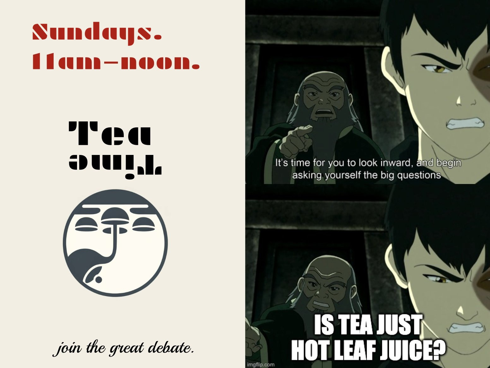

tea time
most sundays
,
11am to noon
first one:
soon. message me on
x
or
ig
where:
cafe creme downtown
, outside patio
what:
bring a life problem or a big question
how:
order inside, then find the tea sign
